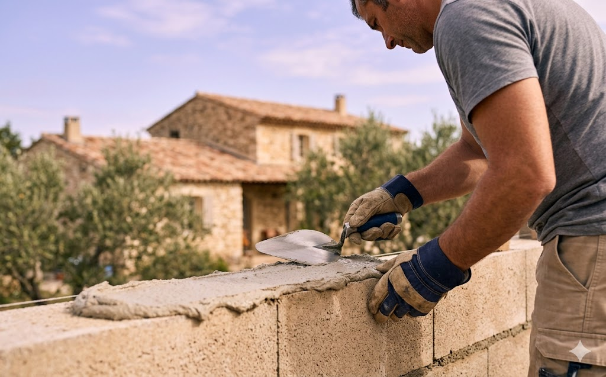

Prestation 01
Maçonnerie générale
Gros œuvre, fondations, élévation, ouvertures, extensions. Nous bâtissons dans les règles de l'art pour des constructions pérennes.
- Fondations & dallages béton armé
- Élévation murs parpaing, brique, pierre
- Ouvertures & ravalement de façade
- Extensions & agrandissements